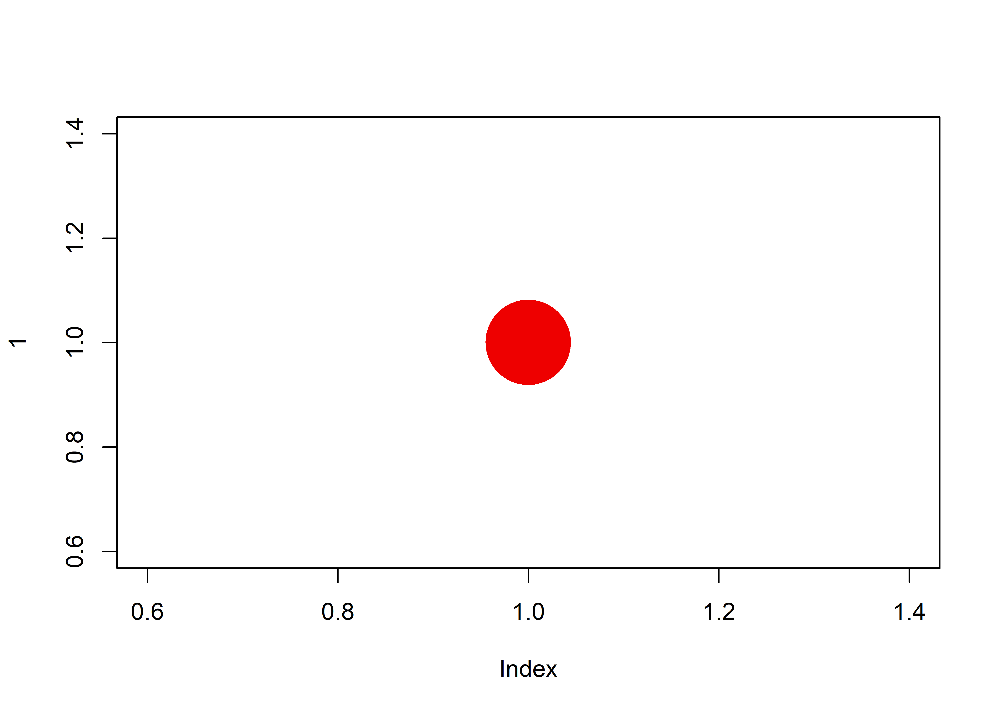
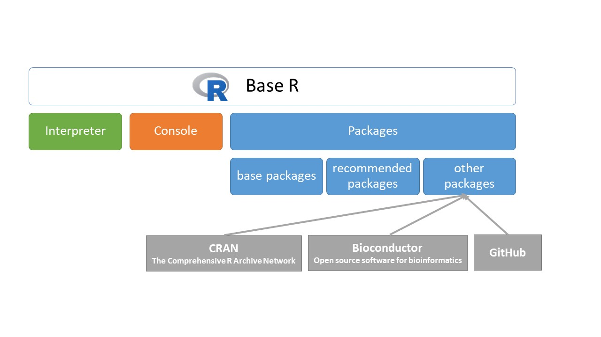

2 The R language
2.1 Basic data type
It this chapter, we’ll focus on R language. First, we need to learn about data types. The R programming language has something called types, and there are four of them:
- character
- integer
- double
- logical.
Let’s take a look at each one of these. Let’s start with double.
2.1.1 Double
We can easily create numbers in R. For example:
45
#> [1] 45
5
#> [1] 5
0.5
#> [1] 0.5
-0.33
#> [1] -0.33We can execute these lines, these are simple commands, more precisely numerical constants. These elements of R language have a fix value. We can’t change the value of a constant. The 0.5 means 0.5. So executing of 0.5 five we get 0.5 in R console. Decimals omitting the leading zero are acceptable, we can write .5. It means 0.5. So, we can get a tricky form of a number for example -.5, which means -0.5. You can check this out executing these lines.
-.5
#> [1] -0.5We are going to move on to discuss the exponential format of numbers. This is the scientific notation, where the number after ‘e’ gives the powers of ten. For example 4e2 means 400, because 4 multiplied by 10 squared is 400 (4 multiplied by 10 the power of 2).
4e2
#> [1] 400Generally, we use plus-minus sign before the power, for example 4e+3, which value is 4000, 4.2e+3 means 4200, and 4.2e-3 means 0.0042. In this case, we have to divide by 10 cubed (10 to the power of 3), or multiplied by ten to the power of -3.
4e+3
#> [1] 4000
4.2e+3
#> [1] 4200
4.2e-3
#> [1] 0.0042The last format of numbers is the hexadecimal. For example after ’0x’ prefix, we can type 0xfe3 which means 4067.
0xfe3
#> [1] 4067The hexadecimal numbering system uses 16 as the base (as opposed to ten), so in this system we have 16 digits to represent numbers. The symbols “0”–“9” to represent values 0 to 9, and “A”-“F” (or alternatively “a”-“f”) to represent values 10 to 15.
We use hexadecimal at most, when we specify a color. For example:
plot(1, col="#ee0000", pch=16, cex=8)
This command creates a plot (graph), with only one point coloured by red. A hexadecimal color is specified with a # and 2 digits for red, to digits for green and two digits for blue (#RRGGBB). RR (red), GG (green) and BB (blue) are hexadecimal integers between 00 and FF specifying the intensity of the colour. For example, #0000FF is displayed as blue, because the blue component is set to its highest value (FF) and the others are set to 00.
2.1.2 Integer
The next number type is the integer. Integer means the whole numbers, For example 4, 42 or -12. But in R we have to use the capital L suffix. L just indicates that this is a long, it’s an internal storage type. It is a way to represent natural numbers like 1 and 2. Integers arise from counting, in most cases.
4L
#> [1] 4
42L
#> [1] 42
-12L
#> [1] -12To sum it up, decimal values like 4.5 and whole numbers without L suffix are double in R. Whole numbers with L suffix are integers in R. Both double and integer are numerics.
Let’s try something. Type in 2 and 2L, and execute them. You don’t see the difference between the double 2 and the integer 2 from the output.
2
#> [1] 2
2L
#> [1] 2However, there are two functions that reveal the difference. The typeof() and class() functions return almost the same values, the types of the data. Notice, the class() function with double argument returns "numeric".
typeof(2)
#> [1] "double"
typeof(2L)
#> [1] "integer"
class(2)
#> [1] "numeric"
class(2L)
#> [1] "integer"Of course, we can try these functions with decimal values.
typeof(2.4)
#> [1] "double"
class(2.4)
#> [1] "numeric"2.1.3 Characters
Text (or string) values are called characters in R. For example type in some text inside quote marks.
"some text"
#> [1] "some text"
'Dobó, István'
#> [1] "Dobó, István"
" sldjf odiuoiuoiu657676876987876875 32 23sdcsd)(/=(/%"
#> [1] " sldjf odiuoiuoiu657676876987876875 32 23sdcsd)(/=(/%"Note how the quotation marks in the editor indicate that "some text" is a string. Syntax highlighting also helps you to identify string values. It may also be noted that autocompletion is also working. We typed in only one quote mark, the second one appeared automatically. We can use double quote mark (") and single quote mark ('), but the opening and the closing quote marks need to match. If we start with single quotation mark, we have to finish with single one. If we start with double quotation mark, we have to finish with double one.
We can use any characters inside quotation marks, except surrounding quotation marks.
Let’s check out the typeof() and class() function with character data. They return "character".
typeof("Friday")
#> [1] "character"
class("Friday")
#> [1] "character"2.1.4 Logical
The last data types is the logical. Boolean values (TRUE or FALSE) are called logical in R. Let’s head over to the script window and start with TRUE, in capital letters. TRUE is a logical. Logical constants can be either TRUE or FALSE.
TRUE
#> [1] TRUE
FALSE
#> [1] FALSETRUE and FALSE can be abbreviated to T and F respectively. However, I want to strongly encourage you to use the full versions, TRUE and FALSE.
T
#> [1] TRUE
F
#> [1] FALSEFinally, we can check out the type these logical values.
typeof(TRUE)
#> [1] "logical"
class(F)
#> [1] "logical"Note, we did not use quotation marks in logical vales. If we use them, we will get character vales. For example:
typeof("TRUE")
#> [1] "character"To sum it up, R works with numerous data types. Some of the most basic types are double, integer, character and logical. We learned how to write constants in R. There are two functions typeof() and class() with which we can check out constants’ type.
2.2 Operators
2.2.1 Arithmetic operators
In its most basic form, R can be used as a simple calculator. We can use the following arithmetic operators:
- Addition
- Subtraction
- Multiplication
- Division
- Exponentiation.
Let’s put a basic addition, subtraction, multiplication, division and an extra expression, an exponentiation into our editor window. We use plus (+), minus (-), asterisk (*), slash (/) and double asterisks (**) or hat symbols (^). Double asterisk ** behaves exactly like ^ (hat, caret), these are to-the-power-of, exponent operators.
34.1 + 2e4 # Addition
#> [1] 20034.1
0xe4 - 23 # Subtraction
#> [1] 205
23 * 45000 # Multiplication
#> [1] 1035000
23/12 # Division
#> [1] 1.916667
23 ** 12 # Exponentiation
#> [1] 2.191462e+16
23 ^ 12 # Exponentiation
#> [1] 2.191462e+16Additionally, the modulo (%%) returns the remainder of the division of the number to the left by the number on its right, for example 5 modulo 3 or 5 %% 3 is 2.
5 %% 3 # modulo: remainder of 5 divided by 3
#> [1] 2The integer division x %/% y x divided by y but rounded down.
7 %/% 3 # integer division
#> [1] 22.2.2 Logical operators
R uses standard logical notation for OR and AND, and NOT. First of all, the exclamation mark (!) stands for NOT. So if I type in !TRUE, I’ll get false. Or surprisingly if I type in !FALSE I’ll get true. It just inverts the value.
The ampersand (&) is for AND. So I can type in TRUE & TRUE, which means if true and true then I get true. If I type in TRUE & FALSE then I’ll receive false because both arguments have to be true in order for the result to be true.
Let’s talk about the pipeline symbol (|). The pipeline symbol means OR. So in this case I can type in TRUE | TRUE and I’m going to get back true. If I type in TRUE | FALSE, I’ll get back true because for OR it is enough for only one value to be true to evaluate it as true.
!TRUE
#> [1] FALSE
!FALSE
#> [1] TRUE
TRUE & TRUE
#> [1] TRUE
TRUE & FALSE
#> [1] FALSE
TRUE | TRUE
#> [1] TRUE
TRUE | FALSE
#> [1] TRUE2.2.3 Relational operators
Relational operators are used to compare between values. Here is a list of relational operators available in R.
| Operator | Description |
|---|---|
< |
Less than |
> |
Greater than |
<= |
Less than or equal to |
>= |
Greater than or equal to |
== |
Equal to |
!= |
Not equal to |
2 < 2.3
#> [1] TRUE
2 <= 2.3
#> [1] TRUE
2 > 2.3
#> [1] FALSE
2 >= 2.3
#> [1] FALSE
2 == 2.3
#> [1] FALSE
2 != 2.3
#> [1] TRUE
"apple" == "Apple"
#> [1] FALSE
"apple" != "Apple"
#> [1] TRUE
TRUE == FALSE
#> [1] FALSE
TRUE != FALSE
#> [1] TRUE
TRUE == 1
#> [1] TRUE
TRUE != 1
#> [1] FALSE
(-6 * 14) == (17 - 101)
#> [1] TRUEThe result of comparison is a Boolean value (TRUE or FALSE).
2.2.4 Assignment operators
We will use one of them, the “left arrow” (<-) operator. The “left arrow” assignment operator is actually two symbols, a „less than” sign and a „minus”. Good to know, there is a shortcut for assignment operator, namely Alt+- in RStudio. What is the assignment operator for? It is for objects. Objects allow you to store a value in R. You can then later use this object’s name to easily access the value that is stored within this object.
Let’s create our first object. You can assign the value 4 to an object my_object with the command:
my_object <- 4Then type in the name of the object my_object, and execute it. Notice that when you ask R to print my_object, the value 4 appears.
my_object
#> [1] 4If we use class() or typeof() functions, we’ll get type of the object.
typeof(my_object)
#> [1] "double"
class(my_object)
#> [1] "numeric"2.2.5 Miscellaneous operators
These operators are used to for specific purpose and not general mathematical or logical computation.
Colon operator (:) creates the series of numbers in sequence for a vector.
2:8
#> [1] 2 3 4 5 6 7 8The %in% operator is used to identify if an element belongs to a vector. It returns a logical vector indicating if there is a match or not for all elements in the left operand in the right operand.
c(3, 4, 5, 7, 10) %in% c(2, 4, 6, 8, 10)
#> [1] FALSE TRUE FALSE FALSE TRUEThe double colon operator (::) is a binary operator to access functions or datasets from packages. As we mentioned, packages extend R’s knowledge. Every R package contains functions and/or dataset. Every R package has a name. For example we have an installed packages called MASS. In MASS packages, there is dataset called survey. So, we can type in MASS::survey, to reach the survey dataset from MASS package.
str(MASS::survey)
#> 'data.frame': 237 obs. of 12 variables:
#> $ Sex : Factor w/ 2 levels "Female","Male": 1 2 2 2 2 1 2 1 2 2 ...
#> $ Wr.Hnd: num 18.5 19.5 18 18.8 20 18 17.7 17 20 18.5 ...
#> $ NW.Hnd: num 18 20.5 13.3 18.9 20 17.7 17.7 17.3 19.5 18.5 ...
#> $ W.Hnd : Factor w/ 2 levels "Left","Right": 2 1 2 2 2 2 2 2 2 2 ...
#> $ Fold : Factor w/ 3 levels "L on R","Neither",..: 3 3 1 3 2 1 1 3 3 3 ...
#> $ Pulse : int 92 104 87 NA 35 64 83 74 72 90 ...
#> $ Clap : Factor w/ 3 levels "Left","Neither",..: 1 1 2 2 3 3 3 3 3 3 ...
#> $ Exer : Factor w/ 3 levels "Freq","None",..: 3 2 2 2 3 3 1 1 3 3 ...
#> $ Smoke : Factor w/ 4 levels "Heavy","Never",..: 2 4 3 2 2 2 2 2 2 2 ...
#> $ Height: num 173 178 NA 160 165 ...
#> $ M.I : Factor w/ 2 levels "Imperial","Metric": 2 1 NA 2 2 1 1 2 2 2 ...
#> $ Age : num 18.2 17.6 16.9 20.3 23.7 ...2.2.6 Operator Precedence in R
As we mentioned, R can be used as a powerful calculator. Simply type an arithmetic expression and press Ctrl+Enter.
4 + 8 # will return the result 12
#> [1] 12
4 + 5 + 3 # will return the result 12
#> [1] 12But, there could be problems if you are not careful. R normally execute your arithmetic expression by evaluating each item from left to right. 4 plus 8 equals 12. 4 plus 5 plus 3 equals twelve. But good to know, operators have precedence in the order of evaluation.
Let’s start with more complex expressions that can cause problems if you are not careful.
4 + 5 * 3 # will return the result 19
#> [1] 19Notice that the expression was not evaluated strictly left to right. R actually evaluated 5 times 3 and then added that result to 4. The R operator precedence rules caused this result.
Multiplication and division have a higher precedence than the addition and subtraction operator so the multiplication is performed before the addition. We can arrange the operators in order from high precedence to low precedence. We can extend the list with exponentiation.
Operators with higher precedence (nearer top of the list) are performed before those with lower precedence (nearer to the bottom).
| Operator | Description |
|---|---|
:: |
access |
$ |
component |
[ [[ |
indexing |
^ ** |
exponentiation |
- + |
unary minus, unary plus |
: |
sequence operator |
%any% e.g. %% %/% %in% |
special operators |
* / |
multiplication, division |
+ - |
addition, subtraction |
< > <= >= == != |
comparisions |
! |
logical NOT |
& |
logical AND |
| |
logical OR |
<- |
assignment |
The exponentiation operator has a higher precedence than the multiplication, so the the exponentiation is the first that performed. Three squared multiplied by two:
2 * 3 ** 2
#> [1] 18Operator precedence can be overridden with explicit use of parentheses. In the case of this example, we could enter
(4 + 5) * 3
#> [1] 27
(2 * 3) ** 2
#> [1] 36In practise, if you are at all unsure about the precedence of your operators, the simplest thing to do is to use parentheses to make the evaluation order explicit.
2.2.7 Binary and unary operators
Another thing about operators. There are two different type of operators. Binary and unary operators. The question is, how many operands they require to work properly.
A unary operator is an operator that operates on only one operand. Binary operators that we used earlier operates two operands. We’ve talked about binary operators so far. Addition, subtraction, multiplication, division, exponentiation are binary operators. They require two operands to work properly.
For example 5 – (select these characters for executing) is wrong, we get a continuation prompt. We could complete the command. but we never do that. Click on console pane, and hit Esc.
Complete the line in the script editor, 5–2, hit Ctrl+Enter equals 3. Subtraction is a binary operator, it has two operands. Five and two.
In R, there are a few unary operators, for example unary minus, and unary plus. They are the sign operators. They are used to indicate or change the sign of a value. The + and - signs indicate the sign of a value. The plus sign can be used to signal that we have a positive number. It can be omitted and it is mostly done so. We could type 5, +5. The minus sign changes the sign of a value. To write negative five, we need type in -5. This is the unary minus operator.
5
#> [1] 5
+5
#> [1] 5
-5
#> [1] -5To sum up, we really need another list in the script editor. R Terminology. We talked about constants, this is a language element which has fix value, we can not change. 5 means five, Friday in quotes means Friday. TRUE means logical TRUE. Operators perform mathematical or logical operations on values, on constants. Operators have precedence and operators can be unary or binary. Every constant has a basic type (double, integer, character, logical). And, we can build expressions with constants, operators and parentheses. We also talked about comment in R, that is everything after a # (a hashtag). It will have no effect if you run it in R.
2.3 Objects
We talked about object that is very important language element in R. We will be discussing everything that needs to be known about objects and data structures.
Lets’ start with objects. An object allows you to store data in R for later use. Suppose the height of a rectangle is 2. Let’s assign this value 2 to an object. Let’s call it height.
height <- 2This time, R does not print anything in the console, but we can not see error messages either. Command executing without error messages, even without any messages indicates everything is ok. The command evaluated successfully. Look at the top right pane. In the environment tab we have a new item in the list. Height and its value 2. All objects with name and value will appear in this list. We have only one object in this session, so this list has only one item.
If you now simply type and execute height in the script window, R returns 2.
height
#> [1] 2We can do a similar thing for the width of our imaginary rectangle. We assign the value 4 to an object called width.
width <- 4In the top right pane, we have two items in the list. Actually, this list in the environment tab shows the workspace. Workspace is a special location in your computer’s memory that temporarily stores data we just created using R.
Workspace is the place where R objects ‘live.’ You can list all objects with the ls() function.
ls()
#> [1] "height" "my_object" "width"This shows you a list of all the objects you have created up to now. There are two objects in your workspace at the moment, height and width. If we try to access object that’s not in the workspace, depth for example, R throws an error.
depth # errorSuppose you now want to find out the area of our imaginary rectangle, which is height multiplied by width. Height equals 2, and width equals 4, so the result is 8. We have two ways to calculate the area:
2 * 4
#> [1] 8
height * width
#> [1] 8The second line with objects is more advanced than the first line with constants. Let’s also assign this result to a new object, called area.
area <- height * width
area
#> [1] 8We can print the value of object area, type and execute area. It’s 8. Inspecting the workspace again with ls(), shows that the workspace contains three objects now: area, height and width.
Now, this is all great, but what if you want to recalculate the area of your imaginary rectangle when the height is 3 and the width is 6? You’d have to reassign the objects width and height in the script window, and then recalculate the area. The value of area will change, executing area will return 18.
height <- 3
width <- 6
area <- height * width
area
#> [1] 18How to find the perimeter of this rectangle. Let’s create a new object called perimeter.
perimeter <- 2*(width+height)
perimeter
#> [1] 18Let’s sum up the objects. The general form of creating or modifying an object is object name, assignment operator and an expression.
object_name <- expressionFirst, we have to choose a valid object name. Object name can contain any letters from English alphabet, underscore, dot, or digit. We need to start with letter in an object name. Expression can be a simply constant, or an object name, or constant and object names with operators and parentheses.
We can create logical object or double object, integer object and character object:
x.logical <- TRUE
y.double <- 12.3
z.integer <- 12L
k.character <- "Hello world!"and we can print their type, with typeof() or class() function.
typeof(x.logical)
#> [1] "logical"
class(x.logical)
#> [1] "logical"
typeof(y.double)
#> [1] "double"
class(y.double)
#> [1] "numeric"
typeof(z.integer)
#> [1] "integer"
class(z.integer)
#> [1] "integer"
typeof(k.character)
#> [1] "character"
class(k.character)
#> [1] "character"2.3.1 Testing the type
Instead of asking for the type or class of an object, you can also use the is-dot-functions to see whether objects are actually of a certain type. To see if an object is a double, we can use the is.double() function. It returns a logical value. TRUE or FALSE. To see if an object is integer, we can use is.integer(). There is is.numeric() function to see whether objects are numeric. The integer and double are numerics. Let’s try the is.logical() and the is.character() functions.
# is.*() functions, test of types
is.double(x.logical)
#> [1] FALSE
is.double(y.double)
#> [1] TRUE
is.double(z.integer)
#> [1] FALSE
is.double(k.character)
#> [1] FALSE
is.integer(x.logical)
#> [1] FALSE
is.integer(y.double)
#> [1] FALSE
is.integer(z.integer)
#> [1] TRUE
is.integer(k.character)
#> [1] FALSE
is.numeric(x.logical)
#> [1] FALSE
is.numeric(y.double)
#> [1] TRUE
is.numeric(z.integer)
#> [1] TRUE
is.numeric(k.character)
#> [1] FALSE
is.logical(x.logical)
#> [1] TRUE
is.logical(y.double)
#> [1] FALSE
is.logical(z.integer)
#> [1] FALSE
is.logical(k.character)
#> [1] FALSE
is.character(x.logical)
#> [1] FALSE
is.character(y.double)
#> [1] FALSE
is.character(z.integer)
#> [1] FALSE
is.character(k.character)
#> [1] TRUE2.3.2 Coercion
There are cases in which you want to change the type of an object to another one. How would that work? This is where coercion comes into play! By using the as-dot-functions one can coerce the type of a variable to another type. Many ways of transformation between types are possible. Have a look at these examples.
# as.*() functions, coercion
as.logical(y.double)
#> [1] TRUE
as.logical(z.integer)
#> [1] TRUE
as.logical(k.character)
#> [1] NAThe first three commands here coerce three different objects to a logical. Every number except zero coerced to TRUE, so the first two commands return TRUE. The third command outputs an NA, a missing value. R doesn’t understand how to transform “Hello world” into a logical, and decides to return a Not Available instead. We can try to convert zero to logical.
as.logical(0)
#> [1] FALSEThe result is FALSE. We can easily coerce logical, integer and double to character.
as.character(y.double)
#> [1] "12.3"
as.character(z.integer)
#> [1] "12"
as.character(x.logical)
#> [1] "TRUE"Let’s try to find out how to convert logical and character to number? What functions we have in R with which we can achieve this? Yes, as.double(), as.integer() and as.numeric(). as.numeric() is identical to as.double().
as.double(x.logical)
#> [1] 1
as.double(z.integer)
#> [1] 12
as.double(k.character)
#> [1] NA
as.integer(y.double)
#> [1] 12
as.integer(x.logical)
#> [1] 1
as.integer(k.character)
#> [1] NA
as.numeric(x.logical)
#> [1] 1
as.numeric(y.double)
#> [1] 12.3
as.numeric(z.integer)
#> [1] 12
as.numeric(k.character)
#> [1] NALogical TRUE coerces to the numeric one (1). FALSE, however, coerces to the numeric zero (0). Valid number in a string coerces to number, invalid number in a string, for example “hello,” coerces missing value. R doesn’t understand how to transform “hello” into a numeric, and decides to return a Not Available (NA) instead.
as.double(TRUE)
#> [1] 1
as.numeric(TRUE)
#> [1] 1
as.integer(TRUE)
#> [1] 1
as.double(FALSE)
#> [1] 0
as.numeric(FALSE)
#> [1] 0
as.integer(FALSE)
#> [1] 0
as.double("12.3")
#> [1] 12.3
as.numeric("12.3")
#> [1] 12.3
as.integer("12.3")
#> [1] 12
as.double("hello")
#> [1] NA
as.numeric("hello")
#> [1] NA
as.integer("hello")
#> [1] NA2.4 Data structures
2.4.1 Vectors
In R, we use data sets all the time. Data sets are a collection or group of values, double, integer, character or logical values. They are the result of a scientific measurements, a surveys or other data collection methods. For example, you may record the ages of each member of your family. In R, we have to use the c() function for this, which allows you to combine values into a vector. This is a four member family, 2 children, mother, father. We could combine the ages of each member of family. Execute this command.
c(18, 20, 47, 49)
#> [1] 18 20 47 49As you can see in the output, it is a vector. A vector is nothing more than a sequence of data elements of the same basic data type. This is a double vector. We can check it with typeof() or is.double() functions.
typeof(c(18, 20, 47, 49))
#> [1] "double"
is.double(c(18, 20, 47, 49))
#> [1] TRUEOf course we could also assign this double vector to a new object, age for example.
age <- c(18, 20, 47, 49)We can assert that it is a vector, by typing
is.vector(age)
#> [1] TRUEWe can also check the top right pane, the workspace. Age is listed, and we can see, it is a double vector indicated by num with four elements. “Num” means double.
We can print the value of this vector.
age
#> [1] 18 20 47 49Please execute the age command. We can see, age contains four elements. The firs element is 18, the second 20, the third is 47, and the last element is 49. Every vector is a sequence of data elements. We can check the length of this vector with length() function.
length(age)
#> [1] 4It tells us, age vector holds four elements. The length of this vector is 4.
Good to know, the vector is the simplest data structure in R. Objects we’ve created in the previous topic, are also vectors. They’re all just vectors of length 1. They contain a single number (for example object height) or a single character, object k.character. We can check this with is.vector() function.
is.vector(height)
#> [1] TRUE
is.vector(k.character)
#> [1] TRUESo, to sum up, a vector is a sequence of data elements, so a vectors is a one-dimensional data structure. The last important thing is that in R, a vector can only hold elements of the same type. This means that you cannot have a vector that contains both logicals and numerics, for example. If you do try to build such a vector, R automatically performs coercion to make sure that you end up with a vector that contains elements of the same type. Let’s see how that works with an example.
c(12, TRUE)
#> [1] 12 1
c(12, "Hello")
#> [1] "12" "Hello"
c("Hello", TRUE)
#> [1] "Hello" "TRUE"
c("Hello", TRUE, 23.1)
#> [1] "Hello" "TRUE" "23.1"If you now inspect these vectors, you’ll see that logical value coerced to numeric in the first command. and the numeric or logical values coerced to characters otherwise. So, to sum up, vector is a one-dimensional and homogeneous data structure. Let’s practise creating vector. Store the gender of family members.
gender <- c("male", "male", "female", "male")
gender
#> [1] "male" "male" "female" "male"Gender is a character vector that has length 4. You can check with the length() function, and the top right pane.
length(gender)
#> [1] 42.4.2 Factor
Factor is about categorical variables. Unlike numerical variables, categorical variables can only take on a limited number of different values. A categorical variable can only belong to a limited number of categories. If you want to store categorical data in R, you have to use factors. This is the only way that the statistical modelling techniques handle such data correctly. If we meet categorical variables, we need the factor data structure in R.
A good example of a categorical variable is a person’s gender. It can be male or female. Gender is a categorical variable in statistics. We’ve created the gender object as a character vector. But, as we mentioned, we are not ready. We need to convert this vector to factor. You can use the factor() function.
gender.fact <- factor(gender)
gender.fact
#> [1] male male female male
#> Levels: female maleThe printout looks somewhat different than the original one: there are no double quotes anymore and also the factor levels, corresponding to the different categories, are printed.
R basically does two things when you call the factor function on a character vector: first of all, it scans through the vector to see the different categories that are in there. In this case, that’s “female” and “male.” Notice here that R sorts the levels alphabetically. Next, it converts the character vector, gender in this example, to a vector of integer values. These integers correspond to a set of character values to use when the factor is displayed. These character values are called labels or levels.
Inspecting the structure reveals this. We can use the unclass() to uncover the factor. You can see the underlying integer vector and the character vector of levels. We’re dealing with a factor with 2 levels. The “female”’s are encoded as 1, because it’s the first level, “male” is encoded as 2, because it’s the second level.
unclass(gender.fact)
#> [1] 2 2 1 2
#> attr(,"levels")
#> [1] "female" "male"Why this conversion? Well, it can be that your categories are very long character strings. Each time repeating this string per observation can take up a lot of memory. By using this simple encoding, much less space is necessary. Just remember that factors are actually integer vectors, where each integer corresponds to a category, or a level.
We can also use the str() function to display the internal structure of an R object, of a factor in this case.
str(gender.fact)
#> Factor w/ 2 levels "female","male": 2 2 1 2Finally, we can check the type and the class of this factor with typeof() and class() functions. We can ask whether the factor is a vector or a factor.
typeof(gender.fact)
#> [1] "integer"
class(gender.fact)
#> [1] "factor"
is.vector(gender.fact)
#> [1] FALSE
is.factor(gender.fact)
#> [1] TRUETo sum up the factors. Factor is one-dimensional and homogueonus as a vector. In fact, factor is stored as an integer vectors where each integer has a label. Factor elements can take on one of a specific set of values. Factor gender.fact will take on only the values “male” or “female.” The set of values that elements of a factor can take are called its level.
2.4.3 Matrix
A matrix is similar to a vector. Where a vector is a sequence of data elements, which is one-dimensional, a matrix is a similar collection of data elements, but this time arranged into a fixed number of rows and columns. Since you are only working with rows and columns, a matrix is called two-dimensional. As with the vector, the matrix can contain only one type.
To build a matrix, you use the matrix() function. Most importantly, it needs a vector, containing the values you want to place in the matrix, and at least one matrix dimension: rows and/or columns.
Have a look at the following example, that creates a 2-by-3 matrix containing the values 1 to 6, by specifying the vector and setting the nrow= argument to 2:
matrix(1:6, nrow = 2)
#> [,1] [,2] [,3]
#> [1,] 1 3 5
#> [2,] 2 4 6R sees that the input vector has length 6 and that there have to be two rows. It then infers that you’ll probably want 3 columns, such that the number of matrix elements matches the number of input vector elements. You could just as well specify ncol= instead of nrow=; in this case, R infers the number of rows automatically.
matrix(1:6, ncol = 3)
#> [,1] [,2] [,3]
#> [1,] 1 3 5
#> [2,] 2 4 6In both these examples, R takes the vector containing the values 1 to 6, and fills it up, column by column. If you prefer to fill up the matrix in a row-wise fashion, such that the 1, 2 and 3 are in the first row, you can set the byrow= argument of matrix to TRUE
matrix(1:6, nrow = 2, byrow = T)
#> [,1] [,2] [,3]
#> [1,] 1 2 3
#> [2,] 4 5 6Suppose you pass a vector containing the values 1 to 3 to the matrix function, and explicitly say you want a matrix with 2 rows and 3 columns:
matrix(1:3, nrow = 2, ncol = 3)
#> [,1] [,2] [,3]
#> [1,] 1 3 2
#> [2,] 2 1 3R fills up the matrix column by column and simply repeats the vector. If you try to fill up the matrix with a vector whose multiple does not nicely fit in the matrix, for example when you want to put a 4-element vector in a 6-element matrix, R generates a warning message.
matrix(1:4, nrow = 2, ncol = 3)
#> [,1] [,2] [,3]
#> [1,] 1 3 1
#> [2,] 2 4 2Actually, apart from the matrix() function, there’s yet another easy way to create matrices that is more intuitive in some cases. You can paste vectors together using the cbind() and rbind() functions. Have a look at these calls:
cbind(1:3, 1:3)
#> [,1] [,2]
#> [1,] 1 1
#> [2,] 2 2
#> [3,] 3 3
rbind(1:3, 1:3)
#> [,1] [,2] [,3]
#> [1,] 1 2 3
#> [2,] 1 2 3cbind(), short for column bind, takes the vectors you pass it, and sticks them together as if they were columns of a matrix. The rbind() function, short for row bind, does the same thing but takes the input as rows and makes a matrix out of them. These functions can come in pretty handy, because they’re often more easy to use than the matrix() function.
The bind functions I just introduced can also handle matrices actually, so you can easily use them to paste another row or another column to an already existing matrix. Suppose you have a matrix m, containing the elements 1 to 6:
m <- matrix(1:6, byrow = T, nrow=2)
m
#> [,1] [,2] [,3]
#> [1,] 1 2 3
#> [2,] 4 5 6If you want to add another row to it, containing the values 7, 8, 9, you could simply run this command:
rbind(m, c(7, 8, 9))
#> [,1] [,2] [,3]
#> [1,] 1 2 3
#> [2,] 4 5 6
#> [3,] 7 8 9You can do a similar thing with cbind():
cbind(m, c(1,2))
#> [,1] [,2] [,3] [,4]
#> [1,] 1 2 3 1
#> [2,] 4 5 6 2Next up is naming the matrix. You could assign names to both columns and rows. That’s why R came up with the rownames() and colnames() functions. Their use is pretty straightforward. Retaking the matrix m from before,
rownames(m) <- c("row.1", "row.2")
m
#> [,1] [,2] [,3]
#> row.1 1 2 3
#> row.2 4 5 6
colnames(m) <- c("col.1", "col.2", "col.3")
m
#> col.1 col.2 col.3
#> row.1 1 2 3
#> row.2 4 5 6Printing m shows that it worked.
Just as with vectors, there are also one-liner ways of naming matrices while you’re building it. You use the dimnames= argument of the matrix function for this. Check this out.
matrix(1:6, byrow = T, nrow=2,
dimnames = list(
rows=c("row.1", "row.2"),
cols=c("col.1", "col.2", "col.3")))
#> cols
#> rows col.1 col.2 col.3
#> row.1 1 2 3
#> row.2 4 5 6You can create logical or character matrices as well.
matrix(c(T, F), nrow=3, ncol=4)
#> [,1] [,2] [,3] [,4]
#> [1,] TRUE FALSE TRUE FALSE
#> [2,] FALSE TRUE FALSE TRUE
#> [3,] TRUE FALSE TRUE FALSE
matrix(c("Jane", "Mark"), nrow=3, ncol=4)
#> [,1] [,2] [,3] [,4]
#> [1,] "Jane" "Mark" "Jane" "Mark"
#> [2,] "Mark" "Jane" "Mark" "Jane"
#> [3,] "Jane" "Mark" "Jane" "Mark"2.4.4 Array
In R an array is a vector two or more dimensions. A matrix is actually a two dimensional array. Array is like a stacked matrix. So let’s build some data that we can use to demonstrate that. First of all, let’s build up a character vector.
vector.chr <- c("twas","brillig","and","the","slithey","toves","did","gyre","and","gimble","in","wabe")Now let’s create an array out of that with array() functions.
array.chr <- array(data = vector.chr, dim = c(2, 3, 2))
array.chr
#> , , 1
#>
#> [,1] [,2] [,3]
#> [1,] "twas" "and" "slithey"
#> [2,] "brillig" "the" "toves"
#>
#> , , 2
#>
#> [,1] [,2] [,3]
#> [1,] "did" "and" "in"
#> [2,] "gyre" "gimble" "wabe"With dim= argument we can give it some dimensions. And in this case, we are going to concatenate three values, two rows, three columns, and two levels. We have an array, and you can see that there are three dimensions. So you can see that I have two tables. Actually looks like two matrices. And then there’s a second level. And again it has two rows and three columns. It’s the second half.
Of course, we can create logical or numeric arrays.
array(1:30, dim = c(2, 3, 5))
#> , , 1
#>
#> [,1] [,2] [,3]
#> [1,] 1 3 5
#> [2,] 2 4 6
#>
#> , , 2
#>
#> [,1] [,2] [,3]
#> [1,] 7 9 11
#> [2,] 8 10 12
#>
#> , , 3
#>
#> [,1] [,2] [,3]
#> [1,] 13 15 17
#> [2,] 14 16 18
#>
#> , , 4
#>
#> [,1] [,2] [,3]
#> [1,] 19 21 23
#> [2,] 20 22 24
#>
#> , , 5
#>
#> [,1] [,2] [,3]
#> [1,] 25 27 29
#> [2,] 26 28 30
array(c(T, F, T), dim = c(2, 3, 5))
#> , , 1
#>
#> [,1] [,2] [,3]
#> [1,] TRUE TRUE FALSE
#> [2,] FALSE TRUE TRUE
#>
#> , , 2
#>
#> [,1] [,2] [,3]
#> [1,] TRUE TRUE FALSE
#> [2,] FALSE TRUE TRUE
#>
#> , , 3
#>
#> [,1] [,2] [,3]
#> [1,] TRUE TRUE FALSE
#> [2,] FALSE TRUE TRUE
#>
#> , , 4
#>
#> [,1] [,2] [,3]
#> [1,] TRUE TRUE FALSE
#> [2,] FALSE TRUE TRUE
#>
#> , , 5
#>
#> [,1] [,2] [,3]
#> [1,] TRUE TRUE FALSE
#> [2,] FALSE TRUE TRUE2.4.5 List
List is a one-dimensional and heterogeneous data structure. A list can contain all kinds of R objects, such as vectors and matrices, but also other R objects, such as data frames, factors and even an other list.
Let’s build a lists. We will store information about a family. We can create a list with list() function, we want to store the address, how many cars does the family have, name and age of the family members.
my.family <- list(address="10 Downing Street", cars=5, age=c(12, 15), name=c("Hermione", "Harry"))
my.family
#> $address
#> [1] "10 Downing Street"
#>
#> $cars
#> [1] 5
#>
#> $age
#> [1] 12 15
#>
#> $name
#> [1] "Hermione" "Harry"2.4.6 Data frame
The data frame is the most important data structure in R. R is a statistical programming language, and in statistics we are working with data sets. Vectors and factors are good examples for a minimal data sets. Data sets are typically comprised of observations (cases, instances), and all these observations have some variables associated with them. We can have for example, a data set of 4 people. Each person is an instance, and the properties about these people, such as for example their age, and their gender. How could you store such information in R? We have done it, in a numeric vector and a factor, called age and gender.fact. One-dimensional structures is not really useful to work with. We have to keep together the observations. We need a two-dimensional structure. We need a data frame.
Let’s create a data frame. We need to use data.frame() function.
age <- c(18, 20, 47, 49)
gender <- c("male", "male", "female", "male")
gender.fact <- factor(gender)
df <- data.frame(gender.fact, age)We’used the age vector and gender.fact factor to create the new data frame object. Executing df, we can see the value of the data frame.
df
#> gender.fact age
#> 1 male 18
#> 2 male 20
#> 3 female 47
#> 4 male 49This a two-dimensional structure. It has rows and columns. The rows correspond to the observations, the people in our example, while the columns correspond to the variables, or the properties of each of these people.
We can see that a data frame can contain elements of different types. The first column contains factor labels, and the second one is numerics. We can see the names of the coloumns: gender.fact, age, that come from the function call, from the vector’s name. We can specify the names explicitly, for example
df <- data.frame(gender=gender.fact, age)
df
#> gender age
#> 1 male 18
#> 2 male 20
#> 3 female 47
#> 4 male 49If we print the value of this data frame we can see the new name of the first column. We can also see the names of the rows, which are simply number from 1 to 4. There still is a restriction on the data frame data types. Elements in the same column should be of the same type. That’s not really a problem, because in one column, the age column for example, you’ll always want a numeric, because an age is always a number, regardless of the observation.
Data frame is a two-dimensional and heterogeneous data structure to store small or big data sets. Typically a data frame contains numeric vectors or factors with the same length. Rows correspond to observations to the four member of a family, columns correspond to variables, the properties of the members of the family.
We can check the type and a class of the data frame.
typeof(df)
#> [1] "list"
class(df)
#> [1] "data.frame"
is.vector(df)
#> [1] FALSE
is.factor(df)
#> [1] FALSE
is.data.frame(df)
#> [1] TRUEFinally, practise creating data frame. We also know the heights of the members of the family. How could we store this data in a data frame.
height <- c(172, 180, 167, 183)
df.2 <- data.frame(gender = gender.fact, age, height)
df.2
#> gender age height
#> 1 male 18 172
#> 2 male 20 180
#> 3 female 47 167
#> 4 male 49 183
str(df.2)
#> 'data.frame': 4 obs. of 3 variables:
#> $ gender: Factor w/ 2 levels "female","male": 2 2 1 2
#> $ age : num 18 20 47 49
#> $ height: num 172 180 167 183To sum up, you can find the data structures corresponding types and classes below:
| Data structure | typeof() |
class() |
|---|---|---|
| double vector | "double" |
"numeric" |
| integer vector | "integer" |
"integer" |
| logical vector | "logical" |
"logical" |
| character vector | "character" |
"character" |
| double matrix | "double" |
"matrix" |
| integer matrix | "integer" |
"matrix" |
| logical matrix | "logical" |
"matrix" |
| character matrix | "character" |
"matrix" |
| double array | "double" |
"matrix" "array" |
| integer array | "integer" |
"matrix" "array" |
| logical array | "logical" |
"matrix" "array" |
| character array | "character" |
"matrix" "array" |
| factor | "integer" |
"factor" |
| list | "list" |
"list" |
| data frame | "list" |
"data.frame" |
Table above is based on following code:
# double vector ----
x <- c(1, 2)
typeof(x)
#> [1] "double"
class(x)
#> [1] "numeric"
# integer vector ----
x <- c(1L, 2L)
typeof(x)
#> [1] "integer"
class(x)
#> [1] "integer"
# logical vector ----
x <- c(TRUE, FALSE)
typeof(x)
#> [1] "logical"
class(x)
#> [1] "logical"
# character vector ----
x <- c("Paul", "Jane")
typeof(x)
#> [1] "character"
class(x)
#> [1] "character"
# double matrix ----
x <- matrix(c(1, 2), nrow=2, ncol=2)
typeof(x)
#> [1] "double"
class(x)
#> [1] "matrix" "array"
# integer matrix ----
x <- matrix(c(1L, 2L), nrow=2, ncol=2)
typeof(x)
#> [1] "integer"
class(x)
#> [1] "matrix" "array"
# logical matrix ----
x <- matrix(c(TRUE, FALSE), nrow=2, ncol=2)
typeof(x)
#> [1] "logical"
class(x)
#> [1] "matrix" "array"
# character matrix ----
x <- matrix(c("Paul", "Jane"), nrow=2, ncol=2)
typeof(x)
#> [1] "character"
class(x)
#> [1] "matrix" "array"
# double array ----
x <- array(c(1,2), dim = c(2,3,2))
typeof(x)
#> [1] "double"
class(x)
#> [1] "array"
# integer array ----
x <- array(c(1L,2L), dim = c(2,3,2))
typeof(x)
#> [1] "integer"
class(x)
#> [1] "array"
# logical array ----
x <- array(c(T,F), dim = c(2,3,2))
typeof(x)
#> [1] "logical"
class(x)
#> [1] "array"
# character array ----
x <- array(c("Paul", "Jane"), dim = c(2,3,2))
typeof(x)
#> [1] "character"
class(x)
#> [1] "array"
# factor ----
x <- factor(c("Paul", "Jane"))
typeof(x)
#> [1] "integer"
class(x)
#> [1] "factor"
# list ----
x <- list(c("Paul", "Jane"), c(2,3,2))
typeof(x)
#> [1] "list"
class(x)
#> [1] "list"
# data frame ----
x <- data.frame(name=c("Paul", "Jane"), score=c(2,3))
typeof(x)
#> [1] "list"
class(x)
#> [1] "data.frame"2.5 Functions
You have already used a number of functions in the previous chapters, including c(), str(),
matrix(), length(), and factor(). However, before we look many more useful functions, it is handy to know how to work with functions in R.
When you call a function in R, you use the function name with a number of arguments, which you give inside parentheses to pass information to that function about how it should run and what data it should use. So how do you know what the arguments to a function are? You can either look in the help file—using ?functionName or help("functionName") or you can use a function called args(), which will print the arguments to a function in the console. As an example of using a function, we will look at sample(). This function allows us to randomly sample a number of values from a
vector of given values (this is the R way of selecting balls from an urn). So let’s take a look at the arguments to this function:
args(sample)
#> function (x, size, replace = FALSE, prob = NULL)
#> NULLYou can see that we have four arguments to this function. You will notice that the first two are simply given as x= and size=, whereas the second two are followed by = value. This indicates that they have a default value, so we don’t need to supply an alternative. Because x= and size= do not have a default, we have to tell R what value we want them to take. To know the purpose of the arguments, you will need to take a look at the help files, which will tell you more.
?sampleIn this case, x= is the vector that we want to sample from and size= is the number of samples we want to take, whereas replace allows us to put values back and we can set the probability of each value with prob. When it comes to calling the function, we can supply the arguments in a number of ways.
To start with, we can name all the arguments in full:
sample(x = c("red", "yellow", "green", "blue"), size = 2, replace = FALSE, prob = NULL)
#> [1] "green" "yellow"Because replace= and prob= have default values, this is the same as the following:
sample(x = c("red", "yellow", "green", "blue"), size = 2)
#> [1] "red" "yellow"Using this form of complete naming of arguments, we can actually supply them in any order we like. Therefore, the preceding would do the same as this:
sample(size = 2, x = c("red", "yellow", "green", "blue"))
#> [1] "yellow" "blue"It’s worth remembering that when you actually run each of these lines, you will most likely get a different result because the function is randomly sampling from the vector x. If you provide all the arguments in the same order as the args() function gives them, you do not actually need to give the names of the arguments. Therefore, we can also say this:
sample(c("red", "yellow", "green", "blue"), 2)
#> [1] "green" "blue"In reality, you will often see, and use, a combination of naming and ordering of arguments because you will tend to remember what should come first but not the order of other arguments. Therefore, you might see something like the following:
sample(c("red", "yellow", "green", "blue"), size = 2, replace = TRUE)
#> [1] "green" "red"2.6 Vectorized operations
Vectorized operations, is one of the features of the R language that make it, that makes it easy to use. It makes very, kind of, nice to write code, without having to do lots of looping, and things like that.
As we’ve seen earlier, we can add two numeric constants:
2 + 3
#> [1] 5
x <- 2
y <- 3
x + y
#> [1] 5The idea with vectorized operations is that things can happen in parallel. For example, suppose we got two vectors
here x and y. x is the sequence 1 through 4 and y is the sequence 11 through 14.
x <- 1:4
y <- 11:14
x
#> [1] 1 2 3 4
y
#> [1] 11 12 13 14
x + y
#> [1] 12 14 16 18And we want to add the two vectors together. Now, when we say we want to add them, what we mean is we want to add the first element of x to the first element of y, the second element of x to the second element of y, etc., the third element
to the third element. It adds 1 to 11, 2 to 12, 3 to 13, and 4 to 14, so you get the vector 12, 14, 16, 18.
Similarly, you can use the greater than (>), or less than symbols (<) to, give you logical vectors.
x > y
#> [1] FALSE FALSE FALSE FALSE
x < y
#> [1] TRUE TRUE TRUE TRUESuppose, we have a new y vector with only two elements, and we want to add them together.
x <- 1:4
y <- 11:12
x
#> [1] 1 2 3 4
y
#> [1] 11 12
x + y
#> [1] 12 14 14 16There is an important rule in R, recycling rule: if two vectors are of unequal length, the shorter one will be recycled in order to match the longer vector. For example, our two vectors x and y have different lengths, and their sum is computed by recycling values of the shorter vector y. In this case, when we say we want to add them, what we mean is we want to add 1 to 11, 2 to 12, 3 to 11, and 4 to 12, so you get the vector 12, 14, 14, 16.
Another example is x > 2. So well x is actually a vector of 4 numbers. So, which number are you comparing to 2?
According to the recycling rule, the vectorized operation compares all the numbers to 2, and it gives you a vector of falses and trues depending on which numbers happen to be bigger than 2.
x > 2
#> [1] FALSE FALSE TRUE TRUEFinally, suppose, we have a y vector with three elements.
x <- 1:4
y <- 11:13
x
#> [1] 1 2 3 4
y
#> [1] 11 12 13
x + y
#> [1] 12 14 16 15As you can see, we get a warning message: the length of vector x is not multiple of length of y. In this case, when we say we want to add them, what we mean is we want to add 1 to 11, 2 to 12, 3 to 13, and 4 to 11, so you get the vector 12, 14, 16, 15.
2.7 Creating date sequences
2.7.1 Creating a sequence of numeric values
As we have seen earlier, the colon (:) operator in syntax from:to generates a sequence from from= to to= in steps of 1 or -1.
1:10
#> [1] 1 2 3 4 5 6 7 8 9 10
11:-2
#> [1] 11 10 9 8 7 6 5 4 3 2 1 0 -1 -2
1.2:10
#> [1] 1.2 2.2 3.2 4.2 5.2 6.2 7.2 8.2 9.2A more general way of performing the same operation is with the seq() function. The first two arguments to seq() are the starting and
ending values, and the default gap is one. Therefore, the following lines are equivalent:
1:10
#> [1] 1 2 3 4 5 6 7 8 9 10
seq(from = 1, to = 10)
#> [1] 1 2 3 4 5 6 7 8 9 10The advantage of using the seq() function is that it has an additional argument, by=, that allows you to specify the gap between consecutive sequence values, as shown in the following examples:
seq(from = 1, to = 10, by = 0.5) # Sequence from 1 to 10 by 0.5
#> [1] 1.0 1.5 2.0 2.5 3.0 3.5 4.0 4.5 5.0 5.5 6.0 6.5
#> [13] 7.0 7.5 8.0 8.5 9.0 9.5 10.0
seq(from = 2, to = 20, by = 2) # Sequence from 2 to 20 by 2
#> [1] 2 4 6 8 10 12 14 16 18 20
seq(from = 5, to = -5, by = -2) # Sequence from 5 to -5 by -2
#> [1] 5 3 1 -1 -3 -5These examples illustrate some simple sequences of values. However, let’s consider the following examples, where we create a sequence of values from 1.3 to 8.4 by 0.3:
seq(from = 1.3, to = 8.4, by = 0.3) # Sequence from 1.3 to 8.4 by 0.3
#> [1] 1.3 1.6 1.9 2.2 2.5 2.8 3.1 3.4 3.7 4.0 4.3 4.6 4.9 5.2 5.5
#> [16] 5.8 6.1 6.4 6.7 7.0 7.3 7.6 7.9 8.2In this example, note that the last value in the vector is 8.2, whereas we requested a sequence from 1.3 to 8.4. Of course, the reason that the last value is not precisely 8.4 is that the difference between the start and end of the sequence is not divisible by 0.3 (the specified “gap”).
If instead we wanted to create a sequence of values from a start point to a particular end point, we could specify a length of the output vector instead of the gap in consecutive sequence values:
seq(from = 1.3, to = 8.4, length.out = 10) # Sequence of 10 values from 1.3 to 8.4
#> [1] 1.300000 2.088889 2.877778 3.666667 4.455556 5.244444
#> [7] 6.033333 6.822222 7.611111 8.400000To sum it up, to create a sequence of element we can leverage the seq() function. As with numeric vectors, you have to specify at least three of the four arguments (from=, to=, by=, and length.out=).
2.7.2 Creating a Sequence of Repeated Values
We can use the rep() function in R to create a vector containing repeated values. The first two arguments to the rep() function are the value(s) to repeat and the number of times to repeat the value(s), as shown here:
rep(x = "Hello", times = 5) # Repeat “Hello” 5 times
#> [1] "Hello" "Hello" "Hello" "Hello" "Hello"In the last example, we are repeating a single value, but the first argument to rep() could be a vector of values.
x <- c(1, 2, 3)
rep(x, times = 5) # Repeat the x vector 5 times
#> [1] 1 2 3 1 2 3 1 2 3 1 2 3 1 2 3We can further simplify this example as follows:
rep(1:3, times = 5) # Repeat the x vector 5 times
#> [1] 1 2 3 1 2 3 1 2 3 1 2 3 1 2 3In these examples, we repeat a series of values a specific number of times. Alternatively, we can repeat each of the values a specified number of times by supplying a vector value for the second argument the same length as that in the first argument:
rep(x = c("A", "B", "C"), times = c(4, 1, 3))
#> [1] "A" "A" "A" "A" "B" "C" "C" "C"In this example, we repeat “A” four times, “B” once, and “C” three times. Using this same approach, we can replace each value of a vector a specific number of times, as shown here:
rep(x = c("A", "B", "C"), times = c(3, 3, 3))
#> [1] "A" "A" "A" "B" "B" "B" "C" "C" "C"Alternatively, because the second input is a repeated set of values, this could be written as follows: Click here to view code image
rep(x = c("A", "B", "C"), each = 3)
#> [1] "A" "A" "A" "B" "B" "B" "C" "C" "C"As you can see, the rep() function can be used to create a variety of vectors with repeated sequences. Let’s quickly recap the three ways of using rep, as illustrated in this section:
rep(x = c("A", "B", "C"), times = 3) # Repeat the vector 3 times
#> [1] "A" "B" "C" "A" "B" "C" "A" "B" "C"
rep(x = c("A", "B", "C"), times = c(4, 1, 3)) # Repeat each value a specific number
#> [1] "A" "A" "A" "A" "B" "C" "C" "C"
rep(x = c("A", "B", "C"), each = 3) # Repeat each value 3 times
#> [1] "A" "A" "A" "B" "B" "B" "C" "C" "C"2.7.3 Sequential names
Finally, you can create sequential names from a series of strings or numeric values using the paste() function. Let’s say we have 10 survey questions, or items, and we want the names of the items to be sequential so they reflect their order in which the respondents were exposed to them.
We can create the prefix of the names and a sequence of values to be the suffix:
prefix <- "survey.item"
suffix <- 1:10We can create a vector which takes the prefix and attaches the suffix as a character string. Note; there are two examples below. The first contains no separator (sep = "") between the prefix and suffix; the second example contains a period as the separator (sep = ".").
paste(prefix, suffix, sep="")
#> [1] "survey.item1" "survey.item2" "survey.item3"
#> [4] "survey.item4" "survey.item5" "survey.item6"
#> [7] "survey.item7" "survey.item8" "survey.item9"
#> [10] "survey.item10"
paste(prefix, suffix, sep=".")
#> [1] "survey.item.1" "survey.item.2" "survey.item.3"
#> [4] "survey.item.4" "survey.item.5" "survey.item.6"
#> [7] "survey.item.7" "survey.item.8" "survey.item.9"
#> [10] "survey.item.10"We can simplify this example as follows:
paste("survey.item", 1:10, sep=".")
#> [1] "survey.item.1" "survey.item.2" "survey.item.3"
#> [4] "survey.item.4" "survey.item.5" "survey.item.6"
#> [7] "survey.item.7" "survey.item.8" "survey.item.9"
#> [10] "survey.item.10"We can concatenate two or more vectors:
paste(5:1, "cell", 1:5 , sep=".")
#> [1] "5.cell.1" "4.cell.2" "3.cell.3" "2.cell.4" "1.cell.5"2.8 Subsetting
In this section, we look at the ways in which to extract subsets of data from an object. We can achieve this using square brackets ([ ]), double square brackets ([[ ]]) and dollar sign ($).
There are three operators that can be used to extract subsets of R objects.
| Operator | Description |
|---|---|
[ |
Always returns an object of the same class as the original. It can be used to select multiple elements of an object. |
[[ |
Extracts elements of a list or a data frame. It can only be used to extract a single element and the class of the returned object will not necessarily be a list or data frame. |
$ |
Extract elements of a list or data frame by literal name. |
Different data structures cab be used vary index operators and index vectors, as shown below:
# subsetting with []
obj.vector[index.vector]
obj.factor[index.vector]
obj.list[index.vector]
obj.matrix[index.vector.1, index.vector.2]
obj.array.3D[index.vector.1, index.vector.2, index.vector.3]
obj.data.frame[index.vector]
obj.data.frame[index.vector.1, index.vector.2]
# subsetting with [[]]
obj.vector[[single.index]]
obj.factor[[single.index]]
obj.list[[single.index]]
obj.data.frame[[single.index]]
# subsetting with $
obj.list$element.name
obj.data.frame$element.nameAs with index vectors, you can put one of five input types in the square brackets ([ ]), as shown below:
| Index vectors | Effect |
|---|---|
| Blank | All values are returned |
| A vector of positive integers | Used as an index to return |
| A vector of negative integers | Used as an index to omit |
| A vector of logical values | Only corresponding TRUE elements are returned |
| A vector of character values | Refers to the names of element to return |
Single index can be an integer or a string. To illustrate the subsetting of objects, we will discuss the vector and data frame subsetting.
2.8.1 Subsetting vector
We can index any object in R. We start the vector, then we are moving on to data frame. Subsetting basically comes down to selecting parts of your vector to end up with a new vector, which is a subset of the original vector.
We have a name vector with names of observed people.
name <- c("Paul", "Jane", "Mark", "Ann")After Ctrl+Enter, we can get the whole vector.
Suppose you want to select the first element from this vector, corresponding to the first person’s name. You can use square brackets [] for this.
name[1]
#> [1] "Paul"The number one inside the square brackets indicates that you want to get the first element from the name vector. The result is again a vector, because a single string is actually a vector of length 1. This new vector contains the string "Paul". If you instead want to select the third element, corresponding to third person’s name, you could code remain followed by 3 in square brackets.
name[3]
#> [1] "Mark"Suppose now you want to select the elements in the vector that give the first three people’s names. Instead of using a single number inside the square brackets, you can use a vector to specify which indices you want to select. You use vector containing 1, 2 and 3 inside the square brackets.
name[c(1, 2, 3)] # or name[1:3]
#> [1] "Paul" "Jane" "Mark"How the resulting vector is ordered depends on the order of the indices inside the selection vector. If you change c(1, 2, 3) to c(2, 3, 1), you will get a vector where the second person comes first.
name[c(2, 3, 1)]
#> [1] "Jane" "Mark" "Paul"As we mentioned, we can create regular sequences. For example the colon (:) operator can create the c(1, 2, 3) with 1:3. Or construction 3:1 may be used to generate a sequence backwards.
So, we can use these operation inside square brackets.
name[1:3]
#> [1] "Paul" "Jane" "Mark"
name[3:1]
#> [1] "Mark" "Jane" "Paul"2.8.2 Subsetting data frames
In data frames we can use single brackets with two indices inside, because data frame is two dimensional. First, print the whole data frame.
# creating inline data frame
d <- data.frame(name=c("Paul", "Jane", "Mark", "Ann"),
gender=c("male", "female", "male", "female"),
height=c(184, 167, 111, 172),
age=c(32L, 19L, 13L, 78L),
child=c(T, F, F, F),
cars=c(0, 2, 1, 2))
d
#> name gender height age child cars
#> 1 Paul male 184 32 TRUE 0
#> 2 Jane female 167 19 FALSE 2
#> 3 Mark male 111 13 FALSE 1
#> 4 Ann female 172 78 FALSE 2To select the height of Jane, who is on row 2 in the data frame, you can use the single brackets with two indices inside. The row, index 2, comes first, and the column, index 3, comes second. They will be separated by comma.
d[2, 3]
#> [1] 167Indeed, Jane is 167 cm tall. You can also use the column names to refer to the columns of data frame.
d[2, "height"]
#> [1] 167Of course we select the height and age information on Jane and Mark.
d[c(2,3), "height"]
#> [1] 167 111And Of course we do the same on Paul and Ann. Additionally, we can add the name of the people to the end.
d[c(2,3), c("height", "name")]
#> height name
#> 2 167 Jane
#> 3 111 MarkWe can also choose to omit one of the two indices, to end up with an entire row or an entire column. If you want to have all information on Jane, you can use this command:
d[2, ]
#> name gender height age child cars
#> 2 Jane female 167 19 FALSE 2The result is a data frame with a single observation, because there has to be a way to store the different types.
On the other hand, to get the entire age column, you could use this command:
d[, 4]
#> [1] 32 19 13 78Here, the result is a vector, because columns contain elements of the same type.
We can prevent drop dimensions with drop=F.
d[, 4, drop=F]
#> age
#> 1 32
#> 2 19
#> 3 13
#> 4 78Another way to select only one columns is the $ (dollar sing) operator.
d$cars
#> [1] 0 2 1 22.9 String data
We can often find ourselves having to perform string manipulation tasks in R, including creation of character strings and searching for patterns in character strings. In this section, we look at some of the functions in the Base R installation.
2.9.1 Simple Character Manipulation
Some of the basic manipulations you’ll want to perform are counting characters, extracting substrings, and combining elements to create or update a string. Let’s start with counting characters. You do this using the nchar() function, simply providing the string that you are interested in:
fruits <- "apples oranges pears"
nchar(fruits)
#> [1] 20Notice that all characters are counted, including the spaces. To extract substrings, you use the substring() function. Here, you need to give the string along with the start and end points for the substring. You can extract multiple substrings by giving the vectors of the start and end points.
substring(text = fruits, first = 1, last = 6)
#> [1] "apples"
fruits.2 <- substring(text = fruits, first = c(1, 8, 16), last = c(6, 14, 20))
fruits.2
#> [1] "apples" "oranges" "pears"Finally, you can create a character string from a series of strings or numeric values using the paste() function. You can provide as many strings and objects as you wish to the paste function and they will all be converted to character data and pasted together. Like with many R functions, you can pass vectors to the paste function. Here’s an example:
paste(5, "apples")
#> [1] "5 apples"
nfruits <- c(5, 9, 2)
paste(nfruits, fruits.2)
#> [1] "5 apples" "9 oranges" "2 pears"You can use the argument sep= to change the separator between the pasted strings, which as you can see in the preceding example is a space by default, like so:
paste(fruits.2, nfruits, sep = " = ")
#> [1] "apples = 5" "oranges = 9" "pears = 2"2.9.2 Searching and Replacing
Two of the most useful functions for working with character data are the functions grep() and gsub(). These functions allow you to search elements of a vector for a particular pattern (grep()) and replace a particular pattern with a given string (gsub()). You search for patterns using regular expressions (that is, a pattern that describes the character string). Much more information on regular expressions can be found in the R help pages for the function regex(). If you are familiar with Perl expressions, you can use these along with the argument perl = TRUE. Let’s start by looking at the function grep(). The first argument that we are going to give is the pattern to search for, which can be as simple as the string “red.” The second argument will be the vector to search.
colourStrings <- c("green", "blue", "orange", "red", "yellow", "lightblue", "navyblue", "indianred")
grep(pattern = "red", x = colourStrings, value = TRUE)
#> [1] "red" "indianred"In this example, we have used an additional argument, value=. This allows us to return the actual values of the vector that include the pattern rather than simply the index of their position in the vector. Alternatives to grep(values=TRUE):
grep(pattern = "red", x = colourStrings) # returns a vector of the indices of the elements of x that yielded a match
#> [1] 4 8
grepl(pattern = "red", x = colourStrings) # returns a logical vector (match or not for each element of x)
#> [1] FALSE FALSE FALSE TRUE FALSE FALSE FALSE TRUESome more examples of using the grep() function, with a variety of regular expressions, are shown below:
colourStrings <- c("green", "blue", "orange", "red", "yellow", "lightblue", "navyblue", "indianred")
grep("^red", colourStrings, value = TRUE)
#> [1] "red"
grep("red$", colourStrings, value = TRUE)
#> [1] "red" "indianred"
grep("r+", colourStrings, value = TRUE)
#> [1] "green" "orange" "red" "indianred"
grep("e{2}", colourStrings, value = TRUE)
#> [1] "green"You can see how the symbols ^ and $ have been used to mark the start and end of the string. In the example in line 2, we are specifying that immediately following the start of the string is the pattern "red", whereas in line 3 the string ends straight after the pattern "red". The examples in lines 4 and 5 show how to specify that something must appear a given number of times. In line 4, the + indicates that the letter r should appear at least once in the string. In line 5, the {2} following the e indicates that there should be two occurrences of the letter.
The gsub() function, which allows you to substitute a pattern for a value, is very similar, because you also use regular expressions to search for the pattern. The only additional information you need to give is what to substitute in its place. Here is an example:
gsub(pattern = "red", replacement = "brown", x = colourStrings)
#> [1] "green" "blue" "orange" "brown"
#> [5] "yellow" "lightblue" "navyblue" "indianbrown"As with grep, you can use any regular expression to match the pattern you wish to replace.
2.10 Packages in R
R’s functionality is distributed among many packages. Each has a certain focus; for example, the stats package contains functions that apply common statistical methods, and the graphics package has functions concerning plotting. When you download R, you automatically get a set of base and recommended packages, which can be seen in the “library” subdirectories of the R installation.
.libPaths() # paths to packages
#> [1] "C:/Users/RStudio/Documents/R/win-library/4.0"
#> [2] "C:/Program Files/R/R-4.0.4/library"File paths of .libPaths() are used for getting or setting the library trees that R knows about (and hence uses when looking for packages). These core R packages represent a small subset of all the packages you can use with R. In fact, at the time of writing, there are more than 17000. These other packages we call other packages, because
you have to add them to R, from CRAN, Bioconductor or GitHub yourself.

pkg <- installed.packages()
table(pkg[,"Priority"], useNA = "ifany") # number of installed packages
#>
#> base recommended <NA>
#> 14 15 1684As we can see, there are 14 base packages, 15 recommended packages in R, and I have 1684 other packages installed before.
We can print the name of base and recommended packages:
rownames(pkg)[pkg[,"Priority"] %in% "base"] # base packages
#> [1] "base" "compiler" "datasets" "graphics" "grDevices"
#> [6] "grid" "methods" "parallel" "splines" "stats"
#> [11] "stats4" "tcltk" "tools" "utils"
rownames(pkg)[pkg[,"Priority"] %in% "recommended"] # recommended packages
#> [1] "boot" "class" "cluster" "codetools"
#> [5] "foreign" "KernSmooth" "lattice" "MASS"
#> [9] "Matrix" "mgcv" "nlme" "nnet"
#> [13] "rpart" "spatial" "survival"Only a small subset of the installed packages is actually loaded when you start an R session. This helps reduce the start-up time and avoid a behavior known as masking. The search() function shows you which packages are loaded on your machine.
search() # loaded packages (with "package:" prefix)
#> [1] ".GlobalEnv" "package:dplyr" "package:MASS"
#> [4] "package:stats" "package:graphics" "package:grDevices"
#> [7] "package:utils" "package:datasets" "package:methods"
#> [10] "Autoloads" "package:base"During starting up the R, for examle the base, methods, datasets, and utils packages are loaded automatically.
2.10.1 Load packages
To load any of installed packages, call the library() function. If R cannot find the specified package library, it will produce an error. For example MASS is a pre-installed package, part of the recommended packages. We can load it successfully.
library(MASS) # load MASS package We can check the loaded packages, the return value of search() contains the "package:MASS" string.
search()
#> [1] ".GlobalEnv" "package:dplyr" "package:MASS"
#> [4] "package:stats" "package:graphics" "package:grDevices"
#> [7] "package:utils" "package:datasets" "package:methods"
#> [10] "Autoloads" "package:base"But, psych or DescTools packages are part of other packages, the library() function calls may cause error message (in that case we did not install them before).
library(psych) # load psych package
library(DescTools) # load DescTools package2.10.2 Install packages
To load these packages successfully, we need to install them.
These packages are on CRAN, so we type in:
install.packages("psych") # installing from CRAN
install.packages("DescTools") To install packages from Bioconductor, first type the following:
if (!requireNamespace("BiocManager", quietly = TRUE))
install.packages("BiocManager")
BiocManager::install()Install specific packages, e.g., GenomicFeatures and AnnotationDbi, with
BiocManager::install(c("GenomicFeatures", "AnnotationDbi"))The third case is installing from GitHub. You can install emo from GitHub with:
# install.packages("devtools")
devtools::install_github("hadley/emo")So we can insert: 😄.
It is worth to see pacman: A package management tools for R or remotes if you find an elegant way to handle packages.
Finally, we can check repository of our installed packages:
inst.pkg <- installed.packages()[,1] # all installed packages
cran.pkg <- available.packages(
contrib.url(repos = "https://cran.rstudio.com/",
type = "both")) # all CRAN packages
bioc.pkg <- BiocManager::available() # all CRAN & Bioconductor packages
library(dplyr)
repos <- case_when(
inst.pkg %in% cran.pkg ~ "CRAN",
!(inst.pkg %in% cran.pkg) & (inst.pkg %in% bioc.pkg) ~ "Bioconductor",
TRUE ~ "GitHub?"
)
df.pkg <- data.frame(inst.pkg, repos)
table(df.pkg$repos)
#>
#> Bioconductor CRAN GitHub?
#> 42 1646 252.10.3 Masking
Masking occurs when two or more “environments” on the search path contain one or more objects with the same name. Whenever we refer to an object by typing its name, R looks in each of the loaded environments on the search path for that object in turn, starting with the Global Environment. If R finds an object with the name it is looking for, it stops searching. Any objects it doesn’t find have been hidden, or “masked.”
To avoid any potential masking issues, it is possible to reference an object within a package directly by using the packageName::objectName syntax, for example,
base::pi
#> [1] 3.141593
str(MASS::survey)
#> 'data.frame': 237 obs. of 12 variables:
#> $ Sex : Factor w/ 2 levels "Female","Male": 1 2 2 2 2 1 2 1 2 2 ...
#> $ Wr.Hnd: num 18.5 19.5 18 18.8 20 18 17.7 17 20 18.5 ...
#> $ NW.Hnd: num 18 20.5 13.3 18.9 20 17.7 17.7 17.3 19.5 18.5 ...
#> $ W.Hnd : Factor w/ 2 levels "Left","Right": 2 1 2 2 2 2 2 2 2 2 ...
#> $ Fold : Factor w/ 3 levels "L on R","Neither",..: 3 3 1 3 2 1 1 3 3 3 ...
#> $ Pulse : int 92 104 87 NA 35 64 83 74 72 90 ...
#> $ Clap : Factor w/ 3 levels "Left","Neither",..: 1 1 2 2 3 3 3 3 3 3 ...
#> $ Exer : Factor w/ 3 levels "Freq","None",..: 3 2 2 2 3 3 1 1 3 3 ...
#> $ Smoke : Factor w/ 4 levels "Heavy","Never",..: 2 4 3 2 2 2 2 2 2 2 ...
#> $ Height: num 173 178 NA 160 165 ...
#> $ M.I : Factor w/ 2 levels "Imperial","Metric": 2 1 NA 2 2 1 1 2 2 2 ...
#> $ Age : num 18.2 17.6 16.9 20.3 23.7 ...2.11 Internal help
The help() function can be used to display help on a function or indeed any R object. If you know the name of the object you require help with, you can use a function help() or its shorthand, ?.
help(mean)
?meanA general search of all help files can be achieved using either the help.search() function or the shorthand version, ??.
help.search("test")
??testYou can also read about any packages with help()function.
help(package="MASS")